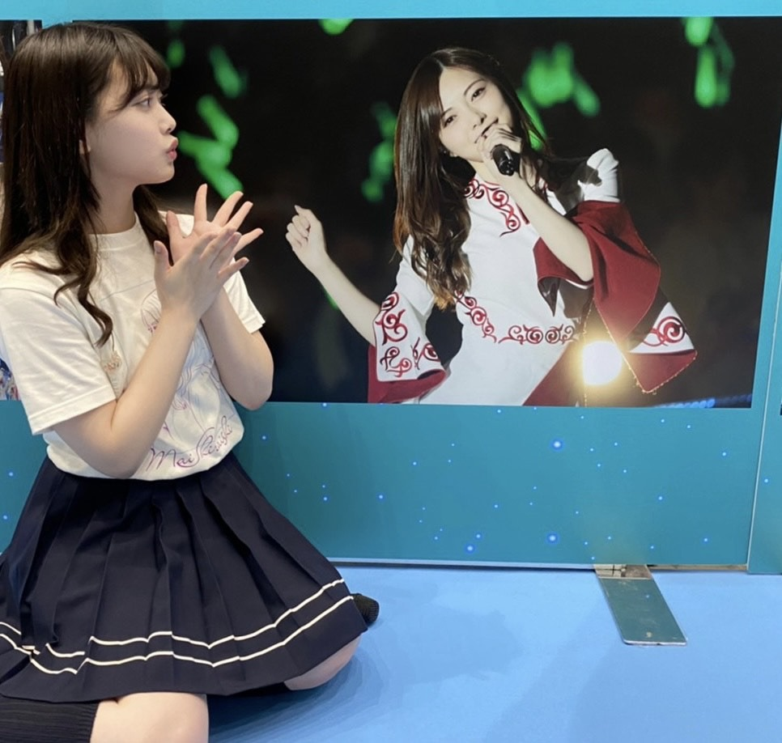

2020/1031Sat将来またみんなで会えたらいいね
こんばんは！
伊藤純奈です

Instagram開設しました☺︎
のんびりと更新していけたら
と思いますフォローよろしく
お願いします〜〜
https://www.instagram.com/junna_ito_official

白石さん。
卒業おめでとうございます☺︎
本当に多くの人から愛されて尊敬されて
目標とされている白石さんは最後まで
綺麗でお茶目で強くてかっこいい先輩
でした！
乃木坂に入る前、オーデション中だった
かなあ。明け方まで眠い目をこすりながら
待って見たCDTVの制服のマネキン。
お姉さんメンバーだけでやっていたあの
パフォーマンス。今でも鮮明に思い出すなあ。
白石さんが真ん中に立っていてこんなに
綺麗な人がいるのかって衝撃をうけたのを
覚えてます。
乃木坂46として白石さんと出会えた事が
本当に嬉しいし、一生の誇りです。
もっと話したかったけどまた会えるもんね？
って言ってくれたからすぐ会えるものだと
思ってますよ〜白石さん〜！！！(笑)
ずーっと私たち後輩のお手本で
いてくれてありがとうございました。
本当に本当にお疲れ様でした！
何回も言ってるけど1期生のみんなは
じゅんにとって本当に大切な大好きな
先輩達なのです。一生尊敬してます！
だいすきだーー！！！
白石さんと撮った写真は
いっぱいあるけどじゅんだけの宝物にします。(笑)

改めて乃木坂46の事が
だいすきになったし、
守りたいって思ったよ〜。
2020/10/31 20:06


コメント(256)
大好き！
インスタ開設嬉しい、、
一生のお願いです！！！
インスタ開設嬉しいぞー！早速フォローしました！
ライブお疲れ様でした(*^^*)
感想は明日お話するね！
そして、Instagram開設！！嬉しいよ！！
投稿楽しみにしてるね！
純奈ちゃん大好き♡
インスタ開設嬉しい！！！☺︎
これからの投稿とか楽しみです！！！！☺︎
まいやんの卒コン涙止まらなかった。
じゅんなちゃん可愛かった！！☺︎
これからもじゅんなちゃんだいすきです！！☺︎
もっともっとじゅんなちゃんが好きになりました！☺︎
じゅんなちゃんだいすきだーーー！！☺︎
白石タクシーで一瞬見られたけど
純奈とまいやんがステージでハモってるところを一度でいいから見たかった…
インスタフォローしたよ〜
機会は作らないとね。
o(^-^)o
インスタ、フォローさせてもらいました。
もちろんインスタフォローしたよー。
これでスイカメンバー5人全員インスタグラマーっ。
コラボとか見たいなー。
白石タクシーの立ち直り中のデュエットからもう泣きそうになっていましたが、卒コン本番はもう我慢ができず号泣してしまいました…。
卒コン中もバレッタやサヨナラの意味、ガールズルール、ライブ後のアフター配信などなど…まいやんと最後の最後まで沢山寄り添ってパフォーマンスする純奈を見れて良かったです！これからもまいやんをずっと応援していきたいと思います！
インスタ開設は素直に嬉しいです！欠かさずチェックしようと思います！これからもお体にお気をつけて頑張ってください。これからも応援しています！
そしてインスタおめでとう！！待ってた！！嬉しい♡
スイカが揃った〜！！！！
白石タクシーのお歌素敵だったし、まいやんと歌ってる純奈ちゃんを見て感動しました。純奈ちゃんの歌声大好き！
見れて嬉しかった！！！！
卒業ライブも純奈ちゃんとまいやんの絡みが見れて嬉しかったし、おてて握ってるところめっちゃ可愛くて尊くて。
ガルルも純奈ちゃんのポジションまいやんと近くで見れて涙が止まらなかった。たくさん泣いて感動しました。ありがとう☺︎
明日はミーグリよろしくね☺︎☺︎☺︎
やっぱり2期生も1期生と過ごした時間は長いし、別れがくるのはすごく辛いよね。まいやんの分までこれからも頑張ってね！！
そして、卒業ライブお疲れさまでした。
白石さんの乃木坂としての最後の勇姿と、見送るメンバーさん、純奈ちゃんの心強い眼差しをしっかり見させて頂きました。
まさかバレッタで泣く日が来るとは思わなかったよ〜
純奈ちゃんには私の知らないたくさんの白石さんとの思い出があると思います。
その思い出はこれからの純奈ちゃんの活動の中に現れてくるのでしっかりと心の中に置いておいてください。
純奈ちゃん、素敵なライブをありがとう！
あ、インスタもありがとう！
たくさんたくさんお話したいことがあるのでミーグリでお話させてくださいね！
いつもありがとう！
まず、ライブ本当にお疲れ様！！
麻衣ちゃんと純奈ちゃんのペア、好きだよ！純奈ちゃんはお姉さん的存在だけど、麻衣ちゃんと一緒の時はどこか妹のように見えて凄く好き！！
AbemaTVの立ち直り中、泣きました。。いつか2人の曲も聴いてみたいです！
このライブを観て、自分も更に乃木坂が大好きになったよ！
素敵な時間をありがとう。
そして、インスタ開設待ってました！！すぐフォローしたよ！
これからも乃木坂46を守り続けてね！応援してます！！
インスタありがてぇ！楽しみが増えるよー☺︎︎︎︎
2期にとっては唯一のパイセンがいなくなっちゃうのがね、寂しいっすよねー(涙)ﾅﾅﾐｻﾝ
乃木坂だいすき！頑張ってねー！
ライブでは抜群の歌唱力で、番組とかでは持ち前のトークセンスでこれからも乃木坂の大きな力になってください！めちゃめちゃ応援してます！
インスタ開設待ってました~笑
これからコスメとかファッションとか投稿していくのかな？
755と合わせて色々楽しみにしてるね！
純奈ちゃんにとって乃木坂を先頭切って色んな世界へ引っ張ってくれた偉大な先輩だもんね！
あんなに綺麗で可愛いのに飾らずお茶目で気作だから色んな方に愛されてるんだろうなぁって思ってるよ~
1期生は純奈ちゃん達2期生にとって唯一の先輩たちだから色んな面でお手本にしてきたからそれを今度は後輩たちに背中を見せていく番だね~
もう既に先輩としてかっこいい姿を所狭しと見てるけどもっと出していっちゃおう笑
僕にとって白石さんは乃木坂を好きになるきっかけとなってくれて居なかったら純奈ちゃんとも出会えてなかったかもしれないし大好きな人達にも会えなかったかもしれないから良い出会いを与えてくれた方でもあるんだ~
沢山お写真撮れてよかったね~
いつかこれ見せてもいいかな~ってなったら見せてね笑
これから色んなことに挑戦して頑張ってこんなこと出来るようになりました！って報告出来るようになれたらいいね~
これからもずっとずっと大好きだし応援していくからね！
それじゃあまたね~ばいばーい
先週はミーグリで話せて嬉しいしかったです。
コロナが落ち着き握手会が再開すること楽しみにしてます。
そして、インスタ開設おめでとう。
さっそくフォローしました。次の更新が楽しみです。
スイカメンバー全員インスタ揃ったね(*˙˘˙)♡
これからが楽しみ！！
まいやんの卒業、また素敵な人が卒業してしまった。まいやんへのメッセージのきいちゃんからじゅんちゃんのところで泣いてしまいました…。ほんとに乃木坂って素敵。これからも応援してます！
まいやんへの愛、これでもかっていうくらい伝わりました。
本当に素敵なメンバーばかりの乃木坂だけど、やっぱりまいやんはグループをけん引し続けてきた人だから特別。
一生忘れない特別なライブをありがとう。
Instagram開設おめでとう！
早速フォローしたよ！
これからの投稿を楽しみにしてる！
ブログ更新ありがとう！！！
Instagramはすーぐフォローしました！
純奈ちゃんの投稿を見て、癒やされますね！！
我らの女神万歳
まいやんだいすき
乃木坂だいすき
フォローしました☺︎
そしてインスタ開設ありがとう！
めちゃくちゃ嬉しいです！！
まいやんの卒コンみました！
バレッタ踊ってる純奈かっこよくてでも可愛かったです！
これからも頑張ってください！
ブログ更新ありがとー！
まずはインスタ開設おめでとー！そしてありがとう！
かりんちゃんも言ってたけど、スイカが全員そろったんだねー！
嬉しいです！
まいやんの卒業コンサートお疲れ様でした！
純奈のコメントよかったです、泣きました。
すぐ会えるよ！信じてれば！
会って、たくさん話してほしい！
そして、その報告をどこかでしてくれればみんな嬉しいです！
素敵なブログをありがとう！
応援してます！
インスタさっそくフォローしたよ！
ここ最近2期生のインスタへの参入があったから、純奈も心待ちにしていました。
純奈は写真映えするから、絶対インスタ合っていると思います。
最近純奈不足だったので本当に嬉しいです。
これから色んな純奈を見て行けたら嬉しいです。
あとゆったんもストーリーで言っていたけど、遂にインスタでスイカ集まったね(^^)
またスイカの話も聞けたら嬉しいです。
明日も一緒に頑張っていきましょう！
まいやんへの愛、これでもかっていうくらい伝わりました。
本当に素敵なメンバーばかりの乃木坂だけど、やっぱりまいやんはグループをけん引し続けてきた人だから特別。
一生忘れない特別なライブをありがとう。
Instagram開設おめでとう！
早速フォローしたよ！
これからの投稿を楽しみにしてる！
インスタフォローしたよぉ！更新たのしみにしてます❤︎
卒業コンサート見てて、純奈ちゃんがまいやんのこと好きなのすごく伝わってきたよー。これからどう変わって行くのか、たのしみです。
純奈ちゃん、かわいくてとっても大好き！応援しています❤︎
インスタ開設おめでとう！！！瞬間でフォローした（笑）インスタ生活（？）楽しんでね
そして白石麻衣さん卒業おめでとうだね〜、白石タクシーの｢立ち直り中｣良すぎてずっと号泣してる ♀️
10月もラストでお誕生日が近づいてきたね～
いつもモバメありがとう
一つ前の記事に真面目に
コメントしましたよ
時間がある時でいいから遡って目を通して
貰えると幸せ、わし喜びます
❀❀「サヨナラ」衣装のまいやんを
ブログ記事に持ってくる所が
お純らしくていいね
行間を読ませるニュアンス
コロッケ兄弟をパフォーマンスする
お純もみてみたいな
卒コンお疲れ様でした。
まいやんとのハグ素敵でした。
インスタはやったことなかったのですが、
純奈ちゃんからのモバメ見てインストールしてみました。
・・・全然使い方がわからない(;´Д｀)
純奈ちゃんのフォローはできました！！
MVトークショー楽しみにしていますねー。
質問何にしようかなぁ。
純奈大好き あきひと より
おめでとう
インスタ更新まってるね！
ライブ配信お疲れ様でした！
サヨナラの意味で、純奈ちゃんの我慢していた涙が溢れた時、僕もそれまでも泣いていたけれど更に涙が出てきました。
2期生で卒業してしまったメンバーもいるけれど、今の8人ならもっと乃木坂46を輝かせることができると思っています。
1番近くで、長い時間1期生の背中を見ていた2期生がその背中を3,4期生に見せて、これからの乃木坂46を是非守っていって欲しいです！
僕たちファンはずっとずーーーーっと乃木坂の味方です。
一緒に坂を駆け上りましょう！
ファイティン
インスタ開設も嬉しいです〜(´,,•ω•,,｀)♡
楽しみにしてます！！
白石麻衣さん卒業コンサートお疲れ様でした。
とてもいいライブでした！
バレッタの純奈ちゃん美しかったです！
純奈ちゃんが守りたい乃木坂46を
これからも応援してます(*´ω`*)
早く会いたいです！
ブログ更新ありがとう
白石さん輝いてたね
こんなすごい人と
一緒のグループで活躍している
純奈ちゃん羨ましいな～
白石さんから学んだことを
大切にしてください
これからも純奈ちゃんのことを
応援してます‼️
あとインスタ開設おめでとう
フォローさせていただきました✨
じゅんなちゃんも沢山の卒業生を見送ったね
インスタ開設嬉しすぎてすぐフォローしたよ
これからの投稿楽しみだー
まいやんの卒業コンサートで純奈ちゃんとまいやんの絡みがたくさん見れてすごい嬉しかったし、純奈ちゃんきらきら輝いてたよー！純奈ちゃん大好きです♡
見せたくないと言われると見たいよー
ライブまいやん美しかったねー(みんなもね)
LEDすら超えてた！
やっぱりライブっていいね〜♪さっきまいやんのライブ後のYouTube見てきたけど、感動は続く。。。
ねっ、これからの乃木坂ちゃんにも期待してます。だいすき♪です
白石さんの卒業は寂しいけれど、また会えるよ！きっと！！！
これからも輝く白石さんの姿を純奈さんと、そして乃木坂46の皆さんと一緒に見守っていきたいです！！！
そして、Instagramの開設、おめでとうございます！！
ファンとしてはめちゃくちゃ嬉しいです！！！
純奈さんの魅力を引き出してくれると思うので、ものすごく投稿が楽しみです
純奈さん、いつもありがとう！
ライブ、本当にお疲れ様でした！！！！
花奈さんもいなくなって、ますます寂しくなってしまいますね。
#純奈かわいそう
でも、これからはお姉さんメンバーの側になっている純奈さんが多くを伝えていって、乃木坂46を盛り上げないといけませんね。
僭越ながら、Instagramをフォローさせていただきました！
これからもますますのご活躍を願っています。
ご自愛ください。
いい人達に出会えたね
一生の宝物
気づいたら１期生が８人になるんだね。。
ブログありがとう（＾_＾）
インスタ！！ついに！！嬉しい！！
ずっと待ってたし、本当に嬉しいです（ ; ; ）
これから投稿も楽しみにしてるね〜！
まいやんちゃんとじゅんちゃんのペアが
本当に微笑まして大好きでした！！◎
あしたはミーグリ！
何お話ししましょうか！！
楽しみにしてるね〜！
インスタ開設嬉しい＼(^o^)／
これから沢山のじゅんの姿を見れるよ(*´ω｀*)♪
そして、スイカメンバーも全員インスタやっているよね＼(^o^)／
755もこれから続いてほしいけど(;_;)
ライブお疲れさまでした
まいやんと今後でも会えるから、今後もずっと仲良くで(/･ω･)/
これからも頑張って(/･ω･)/
じゅんもまだまだずっと乃木坂に居てほしいよ(｡>﹏<｡)
コメントする